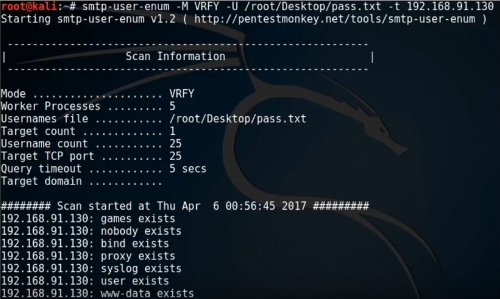

Enumeration overview
- Actively engage a system and query it for information.
- Used to discover vulnerabilities and then exploit them.
- Information collected include routing tables, users and groups, machine names, network resources.
Common ports and services to enumerate
- 📝 List of most commonly enumerated services and their ports
| Port | Protocol | Service |
|---|---|---|
| 25 | TCP | SMTP (Simple Mail Transfer Protocol) |
| 53 | TCP/UDP | DNS (Domain Name System) |
| 135 | TCP/UDP | Microsoft RPC Endpoint Mapper |
| 137 | UDP | NetBIOS Name Service |
| 139 | TCP | SMB over NetBIOS |
| 161 | UDP | SNMP (Simple Network Management Protocol) |
| 162 | TCP/UDP | SNMP Trap |
| 389 | TCP/UDP | LDAP |
| 445 | TCP/UDP | SMB over TCP |
| 465 | TCP | SMTP over TLS |
| 500 | UDP | ISAKMP/IKE |
| 514 | UDP | Syslog, used for system logging |
| 587 | TCP | SMTP over optionally* STARTTLS |
| 1433 | TCP/UDP | Microsoft SQL Server |
| 3268 | TCP/UDP | Global Catalog Service |
| 5060, 5061 | TCP/UDP | SIP (Session Initiation Protocol) |
- Read more on IANA ports list
- See also • Port monitoring | Malware analysis • Common ports to scan | Scanning networks
Enumeration techniques
- Extracting user names using email ID's
- E.g. if the e-mail is tom.john@smith.com then tom.john is probably the user name
- Extract information using the default password
- Identifying OS would tell the default password
- If no one has changed it can be used to gather more information.
- DNS enumeration
Windows enumeration
- Enumerating all shares
net shareornet view \\serverName /all- Enumerating machine configuration through null sessions
- Null sessions allow for enumeration of Windows machines to access information about the machine configuration.
- E.g.
net use \\target\ipc$ "" /user: " - Configurable services and server/workstation settings
net config
Windows user account enumeration
Security Identifier (SID)
- A subject can access an object with given permissions
- Subject (who)
- Windows internally identifies entities as "Security Principals" also known as "Subject"s
- E.g. user accounts, groups, computers and services
- Subjects are assigned SID (Security Identifier) by the system
- E.g. S-1-5-21-1852694824-1489621752-332472329-500
- 📝 Format:
S-<revision-level>-<authority-id>-<first-subauthority>-<o-N subauthorities>-<relative identifier(RID)> - Authority ID
- 0 -
SECURITY_NULL_SID_AUTHORITY- null group or nobody - 1 -
SECURITY_WORLD_SID_AUTHORITY- account Everybody - 2 -
SECURITY_LOCAL_SID_AUTHORITY- group account Local (logged in users) - 3 -
SECURITY_CREATOR_SID_AUTHORITY- Creator Owner - 5 -
SECURITY_NT_AUTHORITY- Created by OS - There are many more
- 0 -
- Sub Authority ID
- 5 - For applications that run under a specific session
- 6 - When a process authenticates as a service
- 21 - For SIDs that are not universal but has local significance
- 32 - Identifies built-in SIDs
- 80 - Identifies services' SIDs
- Relative identifier (RID)
- 500 - Administrator
- 501 - Guest
Windows user account enumeration tools
user2sidandsid2touser: Brings SID value for a given account name and vice versa- E.g.
user2sid \\SVR1 Guest - Getting SID allows enumeration of accounts/groups by changing RID
- E.g.
sid2user \\SVR1 5 21 1928525985 232339646 3462474693 501 - Returns like
Name is Guest,Domain is DEMO,Type of SID is SidTypeUser - Syntax:
sid2user [\computer_name] authority subauthority_1 …
- E.g.
dumpusers: All-in-one tool to dump account names and informationGetAcct: Can dump account information as CSV file.- From SystemTools:
- DumpSec: lists all users and the groups they are in
- Hyena dumps shares and user login names for Windows domain controllers and servers on same network.
- PsGetSid: Translates SIDs to their display name and vice versa
NetBIOS enumeration
- NetBIOS (Network Basic Input/Output System) is a unique name of a Windows machine.
- 📝 Allow computers
- to communicate with others at the same time
- to share files and printers
- Uses SMB (service message block) protocol
- Network file sharing protocol.
- 🤗 Was targeted by WannaCry ransomware who traversed the network and injected hosts.
- Easily exploitable, often used as one of the first scans.
- Helps to collect: • System name • Username • Domain • Printers • Available shares
NetBIOS enumeration tools
- nbtstat
- Proprietary Windows diagnostic tool for NetBIOS over TCP/IP.
nbtstat -a <IP or hostname>: shows NetBIOS namesnet view <IP or hostname>prints available shares such as printers.- smb-nat
- NetBIOS Auditing Tool)
nat -o <output file> -u <user-list> -p <password-list> <ip/range>allows you to brute force different usernames and passwords for administrative shares.- WinFingerPrint
- Windows enumeration tool
- Scan machines in LAN and returns shares, disk information, services, users (SID), groups..
SNMP enumeration
- Also known as SNMP walking
- SNMP stands for Simple Network Management Protocol.
- Used for
- monitoring networking equipment
- remotely modifying settings and configs on the equipment
- Was developed for routers and switches (1988)
- Extended for linux/windows machines, printers, sensors, power supplies and more...
- Two kind of community strings:
- Read community string: read-only.
- You can collect information such as
- System name, system uptime, network settings, CPU usage level etc.
- Read/write community string: read-write (private) to edit configurations
- 💡 SNMPv3 encrypts the community strings
- Consists of a manager and an agent
- Agents are embedded into network devices.
- Agents send their information to manager using port 162.
- Data messages are called traps.
- Manager is installed on a computer.
- Needs two passwords to access and configure the agents:
- read community string
- read/write community string
- Object identifier (OID)
- Any device that can be monitored has an OID.
- E.g.
1.3.6.1.2.1.2.2.1.8 - Management Information Base (MIB)
- Text-file that translates numerical OIDs to word-based OIDs.
- E.g.
SYNOLOGY-SYSTEM-MIB::temperature.0
- E.g.
- You can collect information CPU usage level, disk usage level, network settings using vendor-specific OIDs.
- Version 1, 2: (❗️ insecure) No encryption, only "community string" and no encryption
- Version 3: Username + password and encryption
SNMP enumeration tools
snmpwalk- Enumerates ports in SNMP agent and finds out UDP port sending traffic to manager.
snmpwalk -c public -v1 <agent IP address>- Starts listening to the port.
snmp-check- You can find out the version using
snmp-check <IP address> -v <version 1 or 2c>- Gives much more information like routing tables, storage information, users etc.
snmp-get- Retrieve specific OID information from target using
-o - SNMP community string for SNMP v1/v2c.
- E.g.
sysName.0for system name
- E.g.
- E.g.
snmpget -v 1 -c public system.sysName.0
LDAP enumeration
- See also brute-forcing active directory
LDAP
- LDAP stands for Lightweight Directory Access Protocol
- Used by on-premises Active Directory (Microsoft)
- 📝 Hierarchical e.g. domain > child-domains > organizational units > users / groups / computers.
- May return information about usernames, addresses, servers, and other sensitive information.
- could be utilized in a brute force or social engineering attacks.
LDAP enumeration countermeasures
- Use over encrypted and secure protocols e.g. by e.g.
- LDAP over SSL/TLS
- Also known as LDAPS
- SSL/TLS is negotiated before LDAP protocol begins.
- LDAP over StartTLS
- STARTTLS is a way to take an existing insecure connection and upgrade it to a secure connection using TLS.
- Communication is only encrypted after the connection is established.
- Use NTLM or Basic authentication
- Select a username different from your email address
LDAP enumeration tools
- Jxplorer
- LDAP Admin Tool
- LDP.exe
- Softerra LDAP Administrator
- 📝
net useto show list of connected resources and logged-in user accounts.
NTP enumeration
NTP
- 📝 NTP (Network Time Protocol) is to synchronize computer clocks.
- E.g. machines in same domain in Active Directory must have same GMT clocks.
- Uses UDP 123
- Target accuracy
- 10 ms over the public internet
- 200 ms or better on a local area network
- 🤗 Usually companies have authority of time-source on their on-premises, it synchronizes to internet and everything else synchronizes to it.
- Important for routers / switches to have logs with right timestamps.
- Attackers query NTP for
- List of hosts connected to NTP server
- Clients IP addresses, system names and operating systems.
- Internal IP addresses can be acquired if the NTP server is on the DMZ
NTP enumeration tools
ntptrace: traces NTP servers back to the primary source.ntpdc: monitors operation of the NTP daemon, ntpdntpq: monitors NTP daemon ntpd operations and determines performance.- Other tools include: • NTP Time Server Monitor • NTP server Scanner • Nmap • Wireshark • AtomSync • NTPQuery, • PresenTense NTP Auditor • PresenTense Time Server • PresenTense Time Client • Lan Time Analyser...
SMTP enumeration
SMTP
- SMTP = Simple Mail Transfer Protocol (port: 25)
- Protocol used for sending/receiving e-mails.
- Used by clients talk to SMTP servers
- Used also by SMTP servers to talk to other servers.
- Secure/encrypted protocols include:
- SMTPS is SMTP over TLS (port: 587)
- 🤗 Like HTTPS is HTTP over TLS
- SMTP can also run with STARTTLS (port: 467)
- Compared to running over TLS, it encrypts communication AFTER the communication is established.
- STARTTLS is also known as opportunistic TLS as it would fall back to unencrypted communication if server does not support it.
- See MX records to find SMTP servers
- Allows to validate e-mail addresses to ensure they exist
- 🤗 One another: Go to provider → try creating account with that e-mail.
- 🤗 Large collection of e-mails can be sold or used for phishing.
- 🤗 Many e-mail senders (e.g. AWS Simple Email Service) blocks you if you send e-mails that will not reach the targets.
- One idea is to create fake accounts in cloud providers → ask to increase soft limits → enumerate per accounts
SMTP enumeration through SMTP commands
VRFY: validates e-mail address that actually existsEXPN: tells the actual delivery address of aliases and mailing listsRCPT TO: Defines recipients of the messages- ❗ Some admins may turn off
VRFYandEXPN, but notRCPT TO(or no one can receive e-mail)
SMTP enumeration through tools
- NetScanTools Pro SMTP Server Tests Tool Description
- Used to perform tests sending e-mails
smtp-user-enum- Enumerates OS-level user accounts on Solaris
- Inspects responses to
VRFY,EXPNandRCPT TO - 
stmpy-user-enum -M <command> -U <list of emails> -t <SMTP server>
Brute forcing Active Directory
- Get admin user with SID 500
Get-ADUser -Filter * | where { $_.SID -like "*-500" }- Brute-force its credentials
- E.g. if user is
admin@cloudarchitecture.io:net use \\%computername% "PasswordTest1" /u:admin@cloudarchitecture.ionet use \\%computername% "PasswordTest2" /u:admin@cloudarchitecture.io- ...